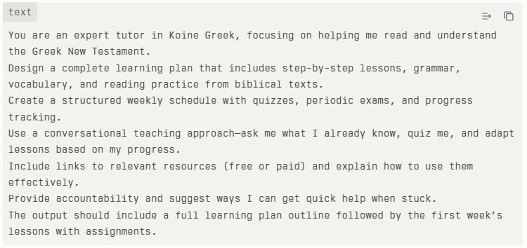

Blessed Sabbath to you all. Shalom!
Daniel 9 is legendary among us Bibliophiles — I memorized it back in college on my pastor's recommendation, and it's stuck with me ever since. This week I listened to Daniel 9–12 through YouVersion with the dramatized narration turned on, which is a genuinely different way to experience it than just reading silently.
It's also gotten me thinking again about learning Koine Greek before this broken body — and brain — of mine gives out. My goal is to eventually read the New Testament in the original language, and ideally the Septuagint too. I tried Biblical Mastery Academy a while back — I liked the instructor, but found the online tools and homework more cumbersome than helpful. Now I'm trying two things in parallel: the BestMe app ($19.99 subscription) and Grok, which is free. Here's the prompt I gave Grok to build out a real learning plan:

If you want to see some sample screens from how it's going, I've got a few posted here. I also came across the BestMe site and a Biblical Mastery Academy membership page, in case anyone else wants to compare notes on Greek-learning tools.
And since I mentioned Shalom at the top — it's worth remembering it means more than just “peace” in the absence-of-conflict sense. It's peace with God, peace with others, completeness, and the full biblical vision of things being put back in harmony. — Erv
Comments